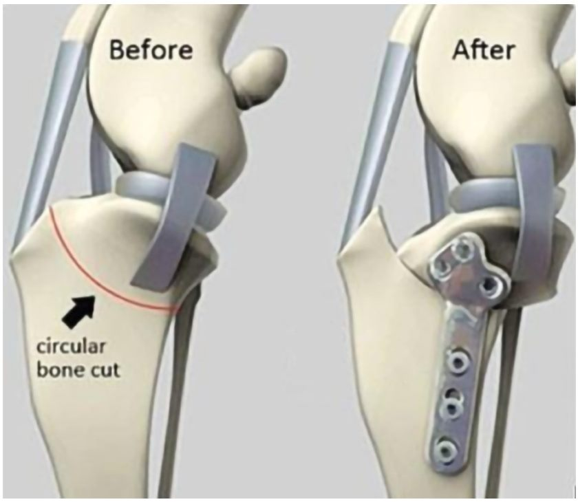
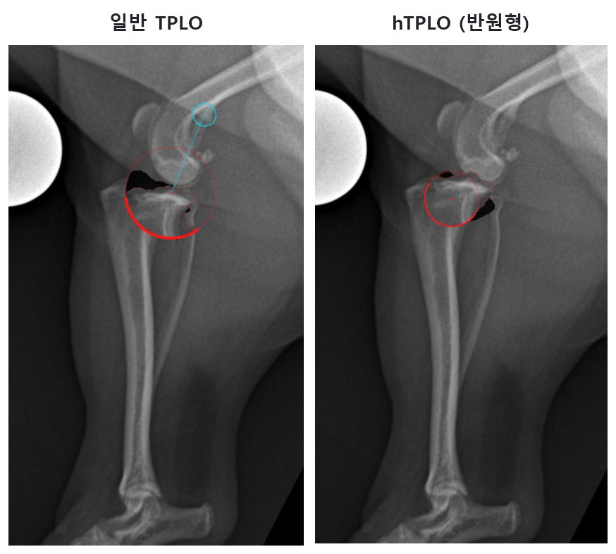

보호자가 먼저 알아채는 모습
- 갑자기 뒷다리 하나를 들고 걷는다
- 디딜 때 다리에 체중을 덜 싣는다
- 앉을 때 한쪽 다리를 옆으로 빼고 앉는다
- 산책이나 점프를 싫어한다
쿨펫외과동물병원 › 십자인대 파열 클리닉
CRUCIATE CLINIC
쿨펫외과동물병원은 십자인대 파열을 TPLO를 우선으로 수술하고, 아이의 다리 상태에 맞춰 CTWO와 ECS를 더합니다. 3kg 이하 소형견부터 45kg 대형견까지, 십자인대 수술(TPLO · CTWO)을 누적 500건 이상 진행했습니다.
진료 월 · 화 · 목 · 금 · 토 10:00 ~ 19:00 (수 · 일 휴진) · 수술시간 오후 2~4시 · 수술 당일 퇴원 원칙 · 전화 031-911-9975
WHAT IS IT
무릎 안에서 정강이뼈(경골)가 앞으로 밀리지 않게 잡아 주는 인대(전십자인대)가 닳거나 끊어진 상태입니다.
강아지의 경골 윗면(경골 고평부)은 뒤쪽으로 기울어져 있어서, 체중이 실릴 때마다 경골이 앞으로 미끄러지려는 힘이 생깁니다. 이 힘을 버티던 십자인대가 끊어지면 무릎이 흔들리고 통증이 생깁니다.
슬개골 탈구가 오래 있었던 아이는 십자인대가 그 부담을 대신 받아 함께 다치기도 합니다. 그래서 슬개골 아이들은 십자인대도 같이 확인합니다. 슬개골 탈구 클리닉 보기

SIGNS & DIAGNOSIS
무릎이 앞뒤로 흔들리는지 보는 촉진 검사와 관절 엑스레이로 파열 여부와 경골 고평부 각도, 뼈의 변형을 확인합니다. 슬개골 탈구가 함께 있는지도 같이 봅니다.
SURGERY
TPLO와 CTWO는 끊어진 인대를 실로 이어 붙이는 수술이 아닙니다. 경골의 각도를 바꿔, 십자인대 없이도 무릎이 안정되게 만드는 수술입니다. 아이의 다리 상태를 보고 아래 술식 중에서 정하거나 함께 합니다.
경골 윗부분을 둥글게 잘라 돌려 기울기를 줄이고 플레이트로 고정합니다. 본원은 십자인대 파열을 TPLO로 우선 수술합니다.
경골에 각 변형(기형)이 있어 뼈의 각도 교정까지 함께 필요한 아이는 쐐기 모양으로 뼈를 잘라 내 교정하는 CTWO로 수술합니다.
십자인대가 완전히 끊어져 측부인대 손상이 의심되거나, 무릎이 돌아가며 흔들리는 피봇 시프트가 있으면 ECS를 함께 해 무릎을 보강합니다.
슬개골 탈구가 함께 있으면 한 번의 수술에서 같이 교정할 수 있는지 상담합니다. 노현준 원장은 이 동시 교정(TPLO+TTT, CTWO+TTT)을 비교한 논문을 국제 학술지 Animals(MDPI)에 게재했습니다. doi.org/10.3390/ani16182912

3kg 이하 소형견은 5mm 쏘우를 쓰는 hTPLO로, 45kg 대형견은 3.5 브로드 플레이트를 쓴 TPLO로 수술한 사례가 있습니다. 체중과 뼈 크기에 맞는 기구와 플레이트를 고릅니다.
수의 외과 석사 수료 · 수의 외과 학회 정회원 · 골관절학회 정회원 · AO principle course 이수 · 수의사 정형외과 수술 교육 프로그램 강사 · 국제 학술지 Animals(MDPI) TPLO · CTWO 비교 논문 게재
SMALL DOG TPLO
hTPLO(Hemicircular TPLO, 반원형 TPLO)는 TPLO와 원리는 같습니다. 경골 윗부분을 둥글게 잘라 돌려 기울기를 줄이고 플레이트로 고정합니다. 다른 점은 뼈를 자르는 방식입니다. 쏘우(뼈를 둥글게 자르는 톱날) 크기를 더 작게 하고, 자르는 원의 중심을 아래로 내립니다.
| 비교 | hTPLO는 일반 TPLO보다 |
|---|---|
| 쏘우 크기 | 더 작은 쏘우를 씁니다 (3kg 이하 아이는 5mm) |
| 자르는 원의 중심 | 아래로 내립니다 |
| 위쪽 뼈 조각 (근위 골편) | 더 크게 남습니다 |
| 경골 조면 (무릎 앞쪽 뼈 돌기) | 면적이 더 크게 남습니다 (슬개골 동시 수술에 유리) |
| 돌려야 하는 호(弧)의 길이 | 짧아집니다 |
| 경골 중심축이 뒤로 넘어가는 정도 | 덜합니다 |

소형견은 경골이 작아서 일반 TPLO로 자르면 위쪽 뼈 조각과 경골 조면이 작고 얇게 남습니다. hTPLO는 이 두 부분을 더 크게 남기기 때문에 플레이트와 스크류를 고정할 뼈가 넉넉해지고, 경골 조면이 얇아져 생기는 부담을 줄여 더 안정적으로 수술할 수 있습니다. 또 일반 TPLO보다 돌려야 하는 호의 길이가 짧고, 경골 중심축이 뒤로 넘어가는 것도 덜해서 국내에 많은 소형견의 십자인대 수술에 더 적합합니다.
슬개골 탈구 수술을 같이 해야 하는 소형견에게 특히 효과적입니다. 일반 TPLO보다 경골 조면의 면적이 커서, 경골 조면을 옮겨 고정하는 경골조면 전위술(TTT)을 함께 할 여유가 생깁니다. 슬개골 탈구 클리닉 보기
슬개골 동시 수술에는 왜 TPLO 계열인가요? 노현준 원장이 국제 학술지 Animals(MDPI)에 발표한 논문에서, 십자인대 파열과 슬개골 탈구가 함께 있는 소형견의 무릎 20개를 비교했습니다. CTWO+TTT는 모든 다리에서 경골이 짧아지고 슬개골이 내려간 반면, TPLO+TTT는 경골 길이와 슬개골 위치가 유지되었고 8~10주차 뼈 유합도 더 빨랐습니다. 논문 보기 (doi.org/10.3390/ani16182912)
수술 전 엑스레이로 경골의 크기와 모양을 확인하고, 소형견은 hTPLO를, 중 · 대형견은 체중에 맞는 TPLO를 선택합니다. 3kg 이하 소형견도 5mm 쏘우를 쓰는 hTPLO로 수술한 사례가 있습니다.
MENISCUS
반월판은 무릎 안에서 충격을 받아 주는 연골입니다. 십자인대가 끊어지면 함께 다치는 경우가 있어, 수술 중에 반드시 확인합니다.
| 체격 | 반월판이 다쳤을 때 |
|---|---|
| 소형견 | 따로 처치하지 않아도 대부분 문제가 없어, 확인 후 소염제로 관리합니다. |
| 대형견 | 손상된 반월판을 절제해 치료합니다. |
BEFORE & AFTER
재발이 없는 수술입니다. TPLO와 CTWO는 끊어진 인대를 다시 잇는 수술이 아니라 무릎 각도를 바꿔 인대 없이도 안정되게 하는 수술이라, 수술한 다리에서 인대가 다시 끊어지는 재발은 없습니다.
수술 비용은 체중과 필요한 술식에 따라 정해져 있으며, 상담 때 포함 항목을 하나씩 설명해 드립니다.
FAQ
TPLO를 우선으로 합니다. 경골의 각 변형(기형)까지 함께 교정해야 하는 아이는 CTWO로 수술합니다. 두 수술 모두 끊어진 인대를 잇는 대신 무릎 각도를 바꿔 인대 없이도 무릎이 안정되게 하는 수술입니다.
hTPLO(반원형 TPLO)는 쏘우 크기를 더 작게 하고 자르는 원의 중심을 아래로 내려, 위쪽 뼈 조각(근위 골편)과 경골 조면을 더 크게 남기는 TPLO입니다. 뼈가 작은 소형견에서 플레이트를 고정할 뼈가 넉넉해지고, 돌려야 하는 호의 길이가 짧아지며 경골 중심축이 뒤로 넘어가는 것도 덜해 더 안정적으로 수술할 수 있습니다. 그래서 국내에 많은 소형견의 십자인대 수술에 더 적합합니다. 특히 경골 조면의 면적이 일반 TPLO보다 커서, 슬개골 탈구 수술(경골조면 전위술, TTT)을 같이 해야 하는 소형견에게 효과적입니다. 슬개골 동시 수술에서 TPLO가 CTWO보다 경골 길이와 슬개골 위치를 잘 유지한다는 결과는 노현준 원장이 국제 학술지 Animals(MDPI)에 발표한 논문(doi.org/10.3390/ani16182912)에 실려 있습니다. 3kg 이하 소형견도 5mm 쏘우를 쓰는 hTPLO로 수술한 사례가 있습니다.
십자인대가 완전히 끊어져 측부인대 손상이 의심되거나, 무릎이 돌아가며 흔들리는 피봇 시프트가 있을 때 ECS를 함께 해 보강합니다.
수술 중 반월판을 확인합니다. 소형견은 반월판 손상을 따로 처치하지 않아도 대부분 문제가 없어 소염제로 관리하고, 대형견은 손상된 반월판을 절제합니다.
수술 당일 퇴원이 원칙입니다. 집에서 편하게 회복하고, 1 · 3 · 5 · 9주차에 내원해 방사선으로 뼈가 붙는 과정을 확인합니다.
운동 제한은 3주입니다. 1 · 3 · 5 · 9주차에 방사선으로 확인하고, 보통 9주차에 뼈가 다 붙으면 치료를 마칩니다.
TPLO와 CTWO는 끊어진 인대를 다시 잇는 수술이 아니라 무릎 각도를 바꿔 인대 없이도 안정되게 하는 수술이라, 수술한 다리에서 인대가 다시 끊어지는 재발은 없습니다.
아이 다리 상태에 맞는 수술 방법을 솔직하게 설명드리겠습니다.
031-911-9975